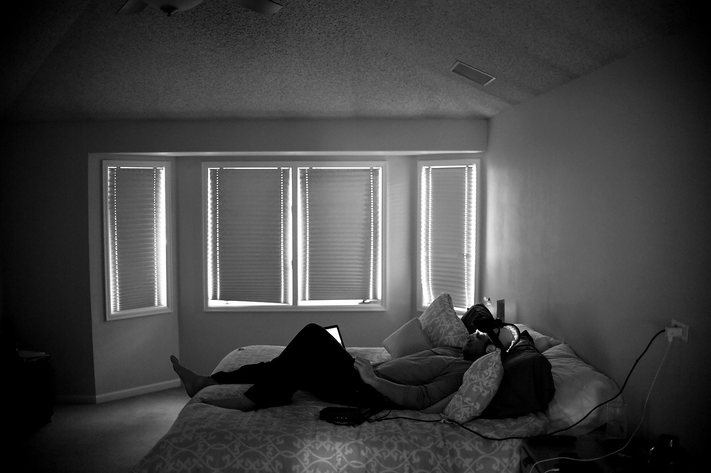

Jeb Putzier knows how he got here, sitting on his couch on a recent Tuesday morning, his hair disheveled and his daily regimen of therapy and supplements scribbled on a calendar on the kitchen table. His thoughts can often be muddled, but some replays remain vivid.
He remembers the brutal blow delivered by New England cornerback Asante Samuel in 2005 that left him with six stitches and a jaw that still pops out. Putzier remembers the crushing hit by San Diego linebacker Steve Foley later that season that is still floating around the internet titled “Steve Foley almost kills Jeb Putzier.”
Putzier remembers his release from the Broncos seven years ago, and he certainly remembers the steep drop that followed: his suicide attempt and an acrimonious end to his marriage that limits visitations with his two young children to once every few weeks.
“My kids. If my kids weren’t here,” he says, “I’d already be dead.”
After suffering what he estimates were more than 1,000 concussions, as well as an array of physical injuries during his eight-year professional career, seven of those in the NFL, Putzier now spends his time searching for ways to clear his mind and end his pain. His joints ache. His head hurts. And although his injuries are far from debilitating, his mind is constantly in overdrive, causing otherwise routine activities to exhaust him.
AAron Ontiveroz, The Denver PostJeb Putzier rummages through a small closet in his basement where he keeps mementos from his playing days. Though in a physical state that has him feeling like he is 75 years old, Putzier reminisced fondly about the friendships he formed in his eight-year NFL career.
At 37, the hope of someday being able to physically sustain a full-time job is just that — hope.
“When he shuts down, it’s like watching a wind-up toy come to the end of its line,” says his longtime girlfriend, Bailey. “He looks like a strong, healthy, able-bodied person, but you don’t see the stuff that goes on behind closed doors.”
Yes, the punishment he took on the football field is how Putzier got here, holed up in his Centennial home with a daily to-do list that includes physical therapy or music therapy or light therapy, or all three, and consuming a cocktail of supplements such as fish oil capsules and cannabidiol that has turned his kitchen cupboard into a mini-GNC.
Certainly not every former football player experiences the symptoms Putzier does. But with the heightened awareness of the long-term damage football can do to the body, many ex-players, regardless of their condition, are anxiously searching for new ways to not only treat pain but also prevent the onset of additional symptoms.
The hunt for answers when so much is still unknown about traumatic brain injuries has created a wild west for players unsure where to turn. Specialists in Colorado have joined the quest and could be on the forefront of significant progress.
Blueprint for recovery
At least twice a month Putzier voluntarily visits his version of hell. Beads of sweat dot his forehead as he slowly makes his way inside the windowless room in the office of Dr. Shane Steadman, a chiropractic neurologist with Integrated Health Systems in Englewood. There is no wall art, and the only furniture is an outsize barber’s chair that beckons Putzier with its soft black leather and plush armrests.
AAron Ontiveroz, The Denver PostJeb Putzier sits in a chair during a QUUEG session at NeuraPerformance. Jeb entered the session without taking his prescriptions in order to get a raw reading of his brain. Rachel Ragsdale or NeuraPerformance said though she does not advise one way or another on the use of prescriptions that, “medications have a global impact on the QEEG.”
“I hate this,” he says as a wave of anxiety and nausea rushes over him. “I hate this so much.”
As Putzier eases into the chair, Steadman straps a pair of infrared goggles around his head. Putzier’s enlarged pupils, bouncing side to side, are projected onto a nearby laptop computer. Faster and faster they bob as the sweat drips down his face and his fingers dig into the leather.
Putzier says he was diagnosed in April with postconcussion syndrome, attaching a label to myriad symptoms he has dealt with since he retired. Steadman, an expert in functional neurology, is one of many specialists Putzier and other former players see to try to find peace.
“The goal is to try to understand the function or, in many of our patients’ cases, we’re trying to understand their dysfunction,” says Steadman, who also does full blood and hormonal evaluations to connect the physical symptoms with the neurological causes. “(We’re) trying to figure out how areas of the brain integrate with other areas of the brain and also how it integrates with the body.”
Colorado brain imaging company joins quest for research, answers
Extensive news coverage of the dangers of concussions in recent years has led some NFL players to retire early to avoid the possibility of further brain damage. And many retired players have taken steps to not only alleviate their postfootball pain but to try to fight the onset of additional complications.
But the science behind traumatic brain injury (TBI), and especially chronic traumatic encephalopathy (CTE), is still in its infancy.
CereScan, a functional brain imaging and data analytics company in Littleton, is working to change that. Using quantitative single-photon emission computed tomography (qSPECT) imaging to measure blood flow in up to 160 regions of the brain, CereScan’s technology, combined with clinical assessments and previous imaging, can offer a more complete picture of a patient’s brain function than structural images, like MRIs and CT scans, alone can provide.
Blood flow in the brain, which indicates how cells are working, is diagnosed and displayed on a color spectrum. Blues and greens show areas with less blood flow, and oranges and reds indicate normal or above-average blood flow. The imaging and diagnostic report, which can cost $2,400 to $4,200 per patient, provides a starting point in recommending treatments, be it infrared light therapy, functional neurology, hyperbaric oxygen therapy, neurofeedback or even yoga.
CereScan stores and catalogues all information in its database, CereMetrix, which now includes about 7,000 scans from patients in 40 states and four countries. In that database are records of dozens of current and former NFL players, Broncos included. CereScan hopes the extensive database will aid practitioners and also advance research of brain injuries and diseases.
The company, with funding from the Tug McGraw Foundation and in partnership with the Colorado Neurological Institute, is nearing a completion of a study called The Invisible Brain Injury Project on the effectiveness of near infrared light therapy as treatment for TBI in military veterans and former NFL players.
“There are some positive indications emerging from various therapies, and we’re as anxious as anyone to help in verifying which offer the most promising results,” says John Kelley, CereScan’s chairman and CEO. “Hyperbaric chamber, yoga, dietary changes, all sorts of things. Sometimes they show good things, sometimes not. But how do you know? We can provide measurements and precise locations of those functional changes.”
Locally, word has gotten out about CereScan’s research. The next step? Getting the NFL and NFL Players Association to buy in. CereScan has had multiple meetings with league and union officials about offering its technology to help active and retired players. But the conversations — much like the research of TBI — are just getting started.
“The NFL is appropriately skeptical of people bearing gifts,” Kelley says. “Over time, we’re gaining credibility with them. We don’t want anything. We’re not asking for anything. We’re saying look, we’re providing technology you guys should be familiar with or take advantage of.”
With interactive technologies such as a Neuro Sensorimotor Integrator, Steadman tests Putzier’s balance and motor skills. The videonystagmography (VNG) goggles Putzier hate so much record his drifting eyes, offering signs of how his brain is working. Coordinated head-and-eye movements target certain areas of the brain that are underperforming.
The process seems simple, but within minutes Putzier’s long hair is drenched, his face is pale and the energy he entered the office with has disappeared. The light-and-sound stimulation is overwhelming, and recovery can sometimes take as many as 18 hours of rest, he says.
“Because we’re using measuring tools, we’re able to see improvements within a short period of time,” Steadman says. “It doesn’t mean that they’re 100 percent resolved. But we’re able to see improvements within a few weeks.”
Progress for Putzier has been slow and unsteady, but noticeable in terms of his emotional stability, mental endurance and thought processing. But the incremental and often invisible changes in his mind are laid bare in specialized images taken at CereScan, a functional brain imaging and data analytics company in Littleton.
CereScan uses quantitative single-photon emission computed tomography (qSPECT) imaging to show how the brain is functioning. (Putzier began working with the company in 2011 and is now both a patient and a consultant.) Unlike magnetic resonance images (MRI) or computed tomography (CT) scans that show the structure of the brain, qSPECT scans measure blood flow, which can reveal how cells are working in the brain.
For Putzier and the dozens of other NFL players and military veterans CereScan has worked with, the images and medical assessments provide not only proof of their cognitive limitations but baselines for treatment, be it near infrared light therapy (NIR), hyperbaric oxygen therapy, neurofeedback, dietary changes or even yoga.
“The industry is coming to the point where the doctors need to know structural and they need to know functional,” says CereScan’s chairman and CEO, John Kelley. “Pictures are great, and the doctors rely on them. But now the brain can be mathematically mapped. So as soon as you put it into digits, now you can put mathematics to it, so the doctors will see almost like a spreadsheet of how an area, up to 160 regions, is performing.”

AAron Ontiveroz, The Denver PostJeb Putzier lies in bed with a light band on his head and headphones on his ears as he does light and music therapy. The light stimulates mitochondria and increases blood flow to areas of the brain that have been low on such things. The sound is said to help in the restoration of neurological cells as the frequency stimulates the brain.
In October 2013, Putzier underwent a qSPECT scan that found numerous regions of his brain lacked the normal amount of blood flow; cool colors dominated many regions, accounting for his cognitive fatigue, unstable mood, light-and-sound sensitivity, balance issues and chronic headaches. Ten months later, many areas of his brain — specifically in his occipital lobe and cerebellum that were constantly rattled from hits — lit up in reds and oranges, indicative of greater blood flow.
The improvement was in part a credit to the weekly work with Steadman, but also the regular sessions of NIR, which Kelley likens to Viagra, but for the brain. Every other day for about 20 minutes at a time, Putzier wraps a foam pad dotted with small bulbs around his head to let the infrared light permeate his skull and shower the surface of his brain to increase blood flow.
But Putzier continues his hunt for help.
He has added music therapy to his regimen, often laying in bed with the infrared light device strapped around as his head as steady beats play through his earphones. The stem cell therapy received in May from Premier Stem Cell Institute in Johnstown will ease his joint pain, he hopes, and put off surgery. He recently started neurofeedback at the NeuraPerformance Brain Center in Denver to try to self-regulate and retrain his brain. And, if insurance allows it, he may try Botox, which has been FDA-approved to treat chronic migraines.
“Trying to explain to people, it’s like we have a rope with knots and we’re trying to untie the knots one at a time,” Putzier says. “But when I untied this knot, it led to other problems in between to the next knot.”